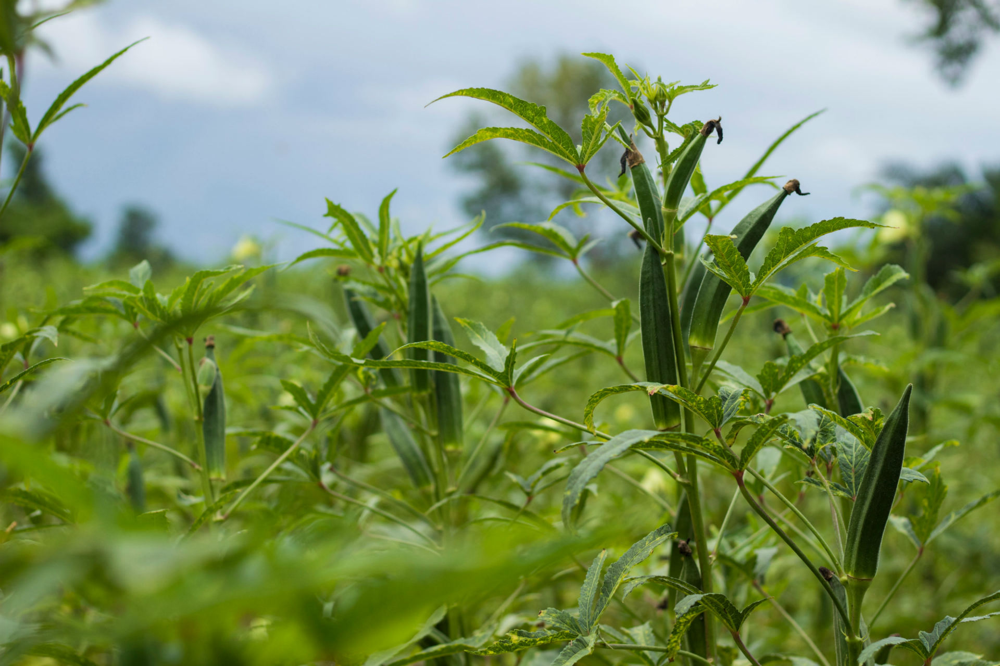
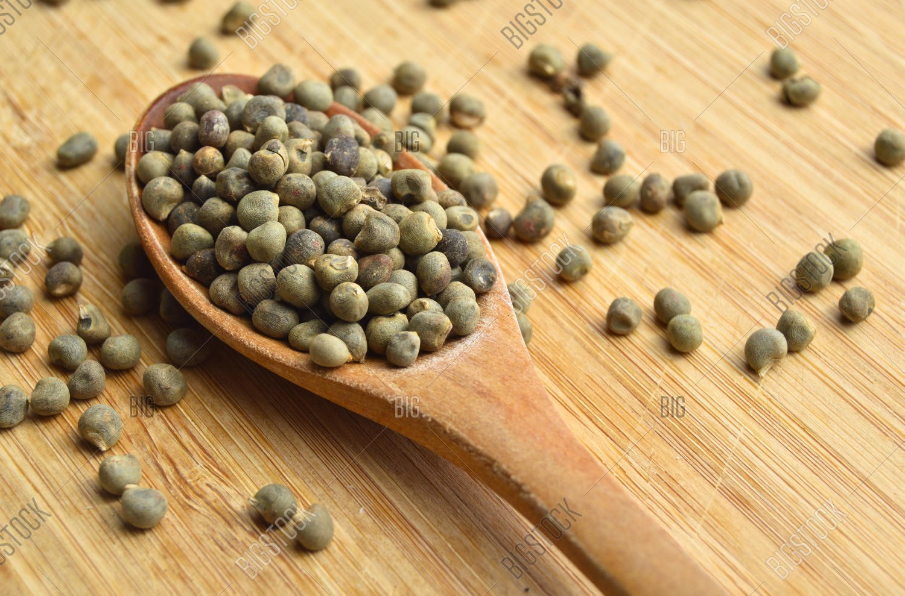
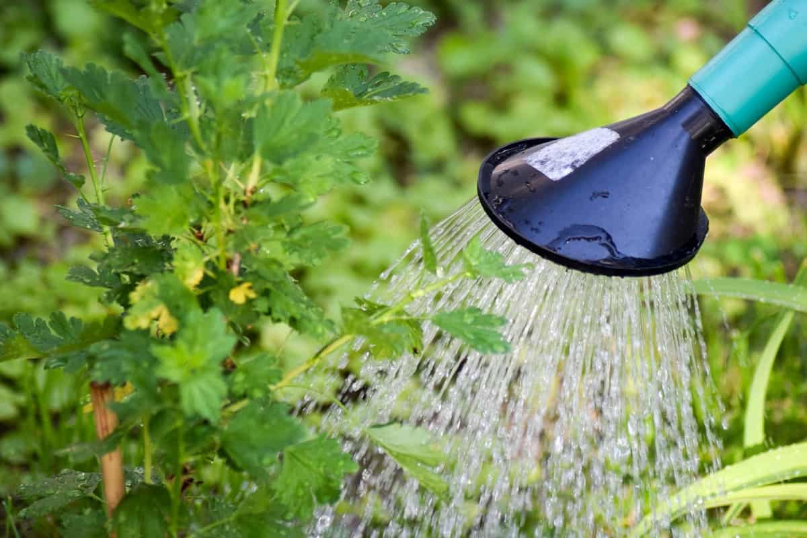
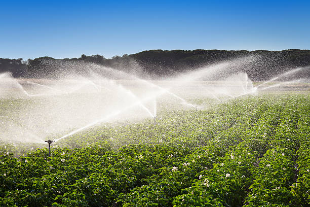

Ladies' Finger: A Nutritious Delight for Health and Culinary Delights
This versatile vegetable not only adds a unique flavor and texture to various dishes but also offers numerous health benefits. In this comprehensive guide, we will explore the origins, nutritional value, culinary uses, and tips for selecting and storing ladies' finger. Whether you're a food enthusiast or simply looking to incorporate healthier ingredients into your diet, you're in the right place!

---Bhindi Cultivation---

Seed Selection:
Choose high-quality bhindi seeds from a reputable supplier or seed store. Look for seeds that are fresh and free from any signs of damage or disease.
Seed Sowing:
Bhindi can be directly sown in the field or started indoors and later transplanted. For direct sowing, wait until the last frost date has passed and the soil temperature has warmed up to around 60-65°F (15-18°C). Plant the seeds about 1 inch (2.5 cm) deep and 12-18 inches (30-45 cm) apart, depending on the variety.

Land Preparation:
Prepare the field by plowing or tilling the soil to a depth of 8-10 inches (20-25 cm). Remove any weeds, rocks, or debris and incorporate well-rotted compost or organic matter to improve soil fertility and structure.
Irrigation:
After sowing the seeds, provide enough water to keep the soil consistently moist until the seedlings emerge. Once established, water the bhindi plants regularly, aiming to provide about 1-1.5 inches (2.5-3.8 cm) of water per week.

Fertilization:
Bhindi plants benefit from regular fertilization. Apply balanced fertilizers that are rich in nitrogen, phosphorus, and potassium. Follow the recommended dosage as per the manufacturer's instructions or based on soil test results.
Pest and Disease Management:
Keep a close eye on the bhindi plants for signs of pests or diseases. Implement appropriate pest control measures, such as using organic pesticides or natural predators, to manage common bhindi pests like aphids, fruit borers, and whiteflies.
Various Factors of Okra Cultivation
Growing Conditions:
Temperature: Ladies' finger prefers temperatures between 25°C and 35°C (77°F - 95°F). It is sensitive to frost and cold temperatures.
Sunlight: Full sun exposure is essential for optimal growth and fruiting. It requires at least 6 to 8 hours of direct sunlight per day.
Soil: Ladies' finger prefers well-drained soils with a pH range of 6.0 to 7.5. It can tolerate a wide range of soil types, including sandy loam, clay loam, and silt loam.
Propagation:
Seeds: Ladies' finger is typically propagated from seeds. Seeds can be obtained from mature, dried pods or purchased from nurseries and seed suppliers.
Seed Treatment: Soaking the seeds in water overnight or lightly scratching the seed coat can help improve germination rates.
Transplanting: Alternatively, ladies' finger can be started indoors in seed trays or pots and then transplanted into the garden after the danger of frost has passed.
Planting and Spacing:
Planting Time: Ladies' finger is best planted after the soil has warmed up and all risks of frost have passed. It is commonly planted in spring or early summer.
Spacing: Plants should be spaced around 12 to 18 inches (30 to 45 cm) apart to provide enough room for growth and airflow.
Pest and Disease Management:
Common Pests: Ladies' finger can be affected by pests such as aphids, whiteflies, fruit borers, and spider mites. Regular monitoring, organic insecticides, and companion planting techniques can help manage these pests effectively.
Diseases: Some common diseases that affect ladies' finger include powdery mildew, fusarium wilt, and root rot. Crop rotation, proper sanitation, and selecting disease-resistant varieties can minimize the risk of disease.
Harvesting:
Harvest Time: Ladies' finger pods are typically ready for harvesting around 8 to 12 weeks after sowing, depending on the variety. They should be harvested when they are young, tender, and around 3 to 4 inches (7 to 10 cm) in length.
Harvesting Technique: Use a sharp knife or garden shears to cut the pods from the plant, taking care not to damage the stem or the remaining plant.